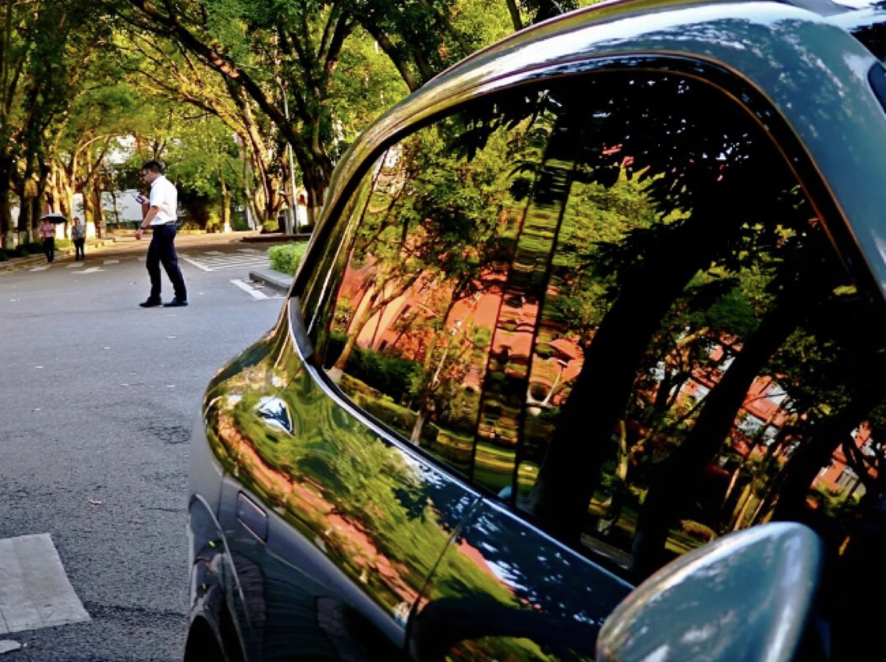

New media operation
新媒体账号运营
从账号定位、内容选题、图文表达、发布节奏到数据复盘的运营案例板块。
joyceya / multidisciplinary creator
Branding, data analysis, and AI-assisted visual systems for ideas that need to be both understood and felt.
To see and to be seen are both forms of capability.
Explored across
systems and stories
About

I'm Zhou Songyao (JOYCEYA), currently pursuing a Master's degree in Cultural and Creative Management at Xi'an Jiaotong-Liverpool University. I focus on internet products, user growth, and improving business efficiency through AI.
From content growth and media strategy to integrated marketing practice at a leading internet platform, my work has centered on one question: how to find more efficient growth paths through user insight and data analysis. Along the way, I have worked on KOL segmentation strategies, breakout-content reviews, communication-flow optimization, and campaign data analysis, gradually building a hybrid capability that combines user understanding, data judgment, and creative execution.
Rather than chasing reach alone, I pay closer attention to how content, product, and user behavior connect: why users click, convert, and stay, and how strategy design and product thinking can improve overall efficiency. I'm also continuing to learn data analysis and AI workflow building, using LLM tools to streamline information organization, user research, content production, and operational decision-making.
Looking ahead, I hope to apply my marketing growth experience, user insight, and analytical mindset to product operations and product management roles, contributing to more complete product growth, UX optimization, and business value creation. I want to grow into an internet product professional with commercial understanding, user thinking, data capability, and strong AI-tool fluency.
我是周颂尧 JOYCEYA，目前就读于西交利物浦大学文化与创意管理硕士项目，关注互联网产品、用户增长与 AI 赋能下的业务效率提升。
从内容增长、媒体策略到互联网平台整合营销实践，我的工作始终围绕一个核心问题展开：如何基于用户洞察与 数据分析，找到更高效的增长路径。过往经历中，我参与过 KOL 分层策略、爆款内容复盘、传播链路优化与 营销活动数据分析，逐步形成了“用户理解 × 数据判断 × 创意执行”的复合能力。
相比单纯追求传播效果，我更关注内容、产品与用户行为之间的关系：用户为什么点击、为什么转化、 为什么留存，以及如何通过策略设计和产品化思维提升整体效率。目前，我也在持续学习数据分析与 AI 工作流 搭建，尝试用 LLM 工具优化信息整理、用户研究、内容生产和运营决策流程。
未来，我希望将自己的营销增长经验、用户洞察能力和数据分析意识，进一步应用到产品运营和产品经理相关 岗位中，参与更完整的产品增长、用户体验优化与业务价值创造。我的职业方向，是成为一名兼具商业理解、 用户思维、数据能力与 AI 工具意识的互联网产品人才。
Selected Works
 View Case Study
View Case Study
AI visual system
A speculative identity and interface language for AI-assisted insight discovery.
 View Case Study
View Case Study
Branding
A modular brand direction system designed for a culture-forward digital studio.
 View Case Study
View Case Study
Visual design
Brand IP, cultural products, and visual systems shaped for expressive presentation.
New media operation
从账号定位、内容选题、图文表达、发布节奏到数据复盘的运营案例板块。

View GalleryPhotography
以街头光影、反射、建筑和海岸场景组成的弧形交互摄影陈列。
Skills / Capabilities
Brand systems, typography, color, editorial rhythm, moodboards, and polished presentation design.
User flows, screen hierarchy, motion intent, micro-interactions, and accessible interface behaviors.
Responsive layouts, component thinking, visual QA, and the judgment to make interfaces feel finished.
Design Process
Gather context, references, audience signals, and project constraints.
Clarify the narrative, success criteria, and visual direction.
Build expressive options through layout, type, color, motion, and systems.
Stress-test details, interaction states, responsiveness, and accessibility.
Package the final experience with clear rationale and next-step readiness.
Contact
Open to portfolio collaborations, brand explorations, AI-assisted creative systems, and digital product concepts.
Let's Work Together